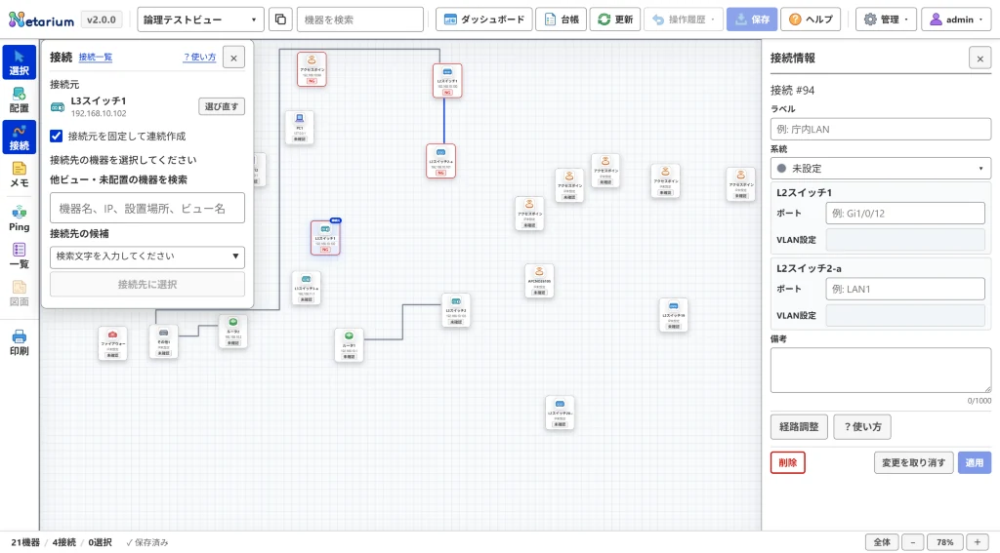
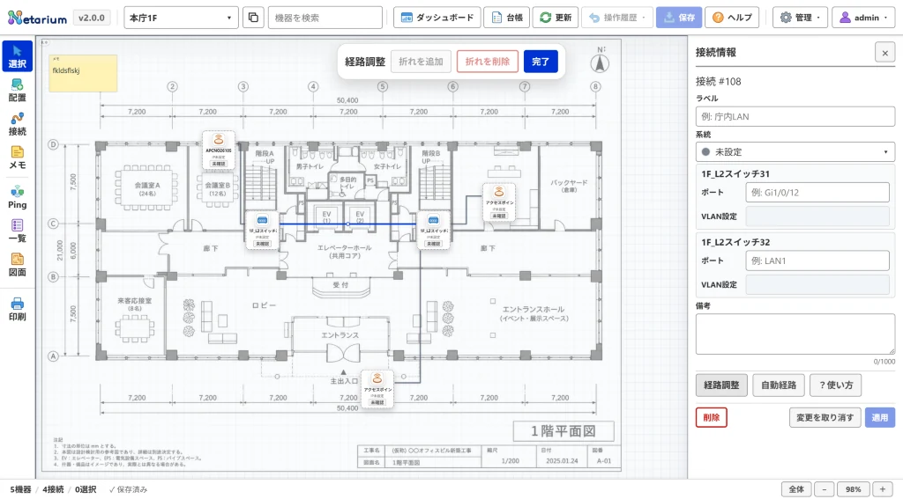

構成図の操作ガイド
論理構成図とフロア物理配置図で、機器の配置・移動・結線・要確認対応・経路調整・メモ・印刷を行う手順を説明します。
キャンバスの表示と基本操作
キャンバスはネットワーク構成図を描画・編集する作業領域です。
| 操作 | 方法と動作 |
|---|---|
| 移動（パン） | キャンバスの空白部分をドラッグすると、画面全体を移動できます。 |
| 倍率変更（ズーム） | マウスホイールの回転、または下部ステータスバー右端の「＋」「−」ボタンで拡大・縮小します。 |
| 標準倍率（100%） | ステータスバーの「現在倍率」を押すと100%に戻り、原点を左上端に合わせます。 |
| 全体表示 | 「全体」を押すと、配置済みの機器・メモが画面内に収まる倍率へ調整します。 |
注意: 初期表示および100%表示では原点を左上端に合わせ、配置不可領域用の余白を設けません。
配置移動を元に戻す・やり直す（管理者のみ）
論理構成図やフロア物理配置図でドラッグ移動した座標を、直前の状態へ戻したりやり直したりできます。
| 項目 | 仕様と条件 |
|---|---|
| 操作方法 | 上部バーの「元に戻す」「やり直す」を押します。画面が狭い場合は「操作履歴」メニューから選びます。 |
| ショートカット | Windows/Linux は Ctrl+Z（元に戻す）、Ctrl+Y または Ctrl+Shift+Z（やり直す）。macOS は Cmd+Z と Cmd+Shift+Z。文字入力欄では無効です。 |
| 対象となる操作 | 機器または物理配置図上のラックアイコンのドラッグ移動。複数機器の同時移動は1件として扱います。 |
| 対象外の操作 | 機器属性・接続・メモ・図面調整、ラックビューや建物ビューの操作、保存中・未確認状態・表示中ビューの競合時は利用できません。 |
| 保存と保持上限 | 戻した座標・やり直した座標は自動保存されます。履歴はビューごとに最大20件保持し、ページを再読み込みすると消えます。 |
作業モードの切り替え
左作業パレットのボタンで作業モードを切り替えます。
| モード | 権限 | 主な操作と動作 |
|---|---|---|
| 選択 | 共通 | 機器やラックアイコンをクリックして右パネルで詳細を確認し、ダブルクリックまたは「個票を開く」で台帳個票を開きます。管理者はドラッグで移動できます。 |
| 配置 | 管理者のみ | 新規機器の種別を選んでキャンバスをクリックすると連続配置できます。「未配置機器」タブから既存機器の配置や、「ラック」からラックの配置も行えます。 |
| 接続 | 管理者のみ | 機器同士の共通接続を作成します。接続元を固定して連続作成でき、別ビューや未配置の機器も検索して結線できます。 |
| メモ | 管理者のみ | 空白部分をクリックして注釈メモ（1000文字以内）を配置します。 |
| 印刷 | 共通 | 表示中のビューを紙やPDFへ出力するプレビュー画面を開きます。 |
配置と取り外しのポイント
- フロア別候補の絞り込み: 所属フロアが設定されたフロア物理配置図では、「未配置機器」に同じフロアと設置フロア未設定の機器だけを表示します。別フロアの機器も選ぶには「他のフロアの機器も表示」をオンにします。
- 物理配置図へのラック配置: 「配置」→「ラック」では、所属フロアが設定されたラックは同じフロアの配置図にだけ新規配置できます。配置済みラックは「配置先へ」で配置先アイコンへ移動できます。
- ラックアイコンの操作: クリックで選択、ダブルクリックまたは「ラックビューを開く」でラックビューを開きます（キーボード操作では Tab で移動し Enter / Space で選択）。
- ラック内機器の接続表示: 物理配置図にラックを配置すると、搭載機器と他機器・別ラックとの共通接続もラックアイコンを端点として表示します（同じラック内で完結する接続は描画しません）。
- ビューからの取り外し: 右パネルの「表示するビューを選択」で現在のビューのチェックを外して「適用」を押すか、機器選択中に Delete キーを押します。台帳から機器は消えません。
接続の作成と削除（管理者のみ）
接続はビューに所属しない共通データです。論理構成図・フロア物理配置図では、両端の位置が一意に決まる接続（物理配置図では配置済みラックの搭載機器を含む）を、機器またはラックの表示アイコンの組ごとに自動で表示します（同じラック内で完結する接続は描画しません）。


- 左パレットで「接続」を押します。
- 接続元にする機器をクリックします。左パネルの「接続元を固定して連続作成」をオンにすると、同じ接続元から複数台へ続けて結線できます。
- 接続先の機器をクリックします。現在のビューにない機器や未配置機器をつなぐ場合は、左パネルの検索欄で機器を検索して候補を選び、「接続先に選択」→「接続を追加」の順に押します。
- 同じ機器ペアに既存接続がある場合は「既存接続 N件・詳細」を確認し、新しいポートを入力して「接続を追加」を押します（両端ともポート未指定の接続がすでにあるときは、少なくとも片側のポートを指定してください）。
- 同じ表示アイコンの組（論理構成図では機器ペア、物理配置図では機器またはラックアイコンの組）の接続は1本の線にまとめ、複数ある場合は「×N」でその線にまとめた接続件数を示します。系統が異なる線が混在する場合は中立色で描画します。
- 接続線をクリックすると、右パネルで接続ごとの明細を確認できます。明細では両端の機器をID昇順に表示し、ポート名・VLAN設定・ラベル・系統・備考を編集して「適用」で保存します。
- 削除するときは右パネルで明細を1件選び、「削除」を押します。全ビューからその接続が消えますが、機器のポートとVLAN設定は台帳に残ります。
- 接続モード中の移動: 接続モードのまま空白部分をドラッグすると倍率を変えずに画面を移動できます。
- ポートとVLANの保存先: VLAN設定は接続ではなく各機器のポートに保存されます。ポート名が空欄の間はVLAN設定を入力できません。ポート間のコピーは機器個票の「接続・ポート」タブで行います。
- ビュー単位の接続線非表示: 「管理」→「建物・フロア・ビュー管理」で「接続線を表示する」のチェックを外して「適用」すると、そのビューだけ接続線を隠します（接続データと手動経路は保持されます）。
接続系統の管理
接続系統は、全ビュー共通で接続線の用途（基幹LAN、庁内LAN、監視用など）を色分けする分類です。
- 上部バーの「管理」→「接続系統設定」を開きます。
- 新規作成は「新規作成」を押し、系統名（100文字以内）と8色のパレットから色を選んで「登録」を押します。
- 変更は一覧から対象を選び、名称・色を変更して下部の「適用」を押します。
- 使用中の系統は削除できません。先に接続側の系統を変更または「未設定」にしてから削除してください。
閲覧者は系統名・色・使用件数の確認のみ可能で、登録・変更・削除は行えません。
ビュー・機器のリンクを共有する
特定のビューや機器を直接開くURLをクリップボードへコピーし、担当者間で共有できます。
- ビューのリンク: 上部バーのビュー検索欄の右隣にあるコピーアイコンを押します。
- 機器のリンク: 右プロパティパネルの「リンクをコピー」、または機器個票上部の「機器のリンクをコピー」を押します。
リンクを開くにはログインが必要です。未保存のビューや機器は保存後にコピーしてください。リンクの共有によってアクセス権限は増えません。
ビュー内一覧・一括設定・要確認の対処
左パレットの「一覧」で、現在のビューに含まれる機器や共通接続の確認と一括変更を行えます。
- 「機器」タブ: 現在のビューに配置した機器を表示します。「台帳で開く」を押すと、現在のビューで絞り込んだ状態で機器台帳を開きます。
- 「接続」タブ: 集約線ではなく共通接続1件ごとに表示します（片端以上がこのビューにあれば、相手が未配置でも表示されます）。検索では機器名・ラベル・系統名のほか、両端ポートのVLAN設定も対象になります。
- 一括設定（管理者のみ）: チェックした接続に対し、下部の「一括設定」で「系統」「ラベル」「備考」を一括変更できます。変更結果は他のビューにも反映されます（ポートや経路は変更しません）。
「要確認 N」の対処（旧接続・未移行VLAN）
移行時に保留された旧接続や、ポートへ引き継がれていない未移行VLANがあるビューでは、左パレットの「一覧」に「要確認 N」を表示します。
| 種別 | 意味と対処方法（管理者のみ） |
|---|---|
| 旧接続の保留 |
旧版からの移行時に共通接続へ自動統合できなかった記録です。「詳細」で保留理由・ポート・属性を確認したうえで次のどちらかを選びます。
|
| 未移行VLAN |
旧版から引き継いだ接続単位のVLAN値です（ポートには自動転記しません）。
|
未配置の接続を含むすべての要確認事項は、データ品質診断から一覧できます。
選択した接続の経路を調整する（管理者のみ）
接続線の手動経路は、ビューと機器ペアの組ごとに保存します。同じ機器ペアの接続本数が増えても、手動経路は引き継がれます。


- 選択モードで接続線をクリックし、右パネルの「経路調整」を押します。
- 青く強調された区間をドラッグ（または矢印キー）で水平・垂直方向へ動かします。
- 折れ目を増やすには上部バーの「折れを追加」、減らすには「折れを削除」を押します（最大8折れ）。
- 操作ごとに自動保存されます。終了するときは上部バーの「完了」を押します。
- 自動経路に戻す場合は、右パネルの「自動経路」を押します。
フロア図面自体の調整中は経路調整を起動できません。図面の調整を完了してから実行してください。
接続の重なりと交差の見分け方
同じ機器から多数の接続線が延びる場合でも、平行区間の分離と交差表現によって視認性を保ちます。
- 平行区間の分離: 接続線は機器付近から自動的に分岐し、平行する区間を一定間隔で離して描画します。
- 表示設定（ブラウザー別保存）: 上部バーの「管理」→「表示設定」から、交差の表現（「山形ブリッジ」／「切れ目（透過）」）と、選択機器につながる線・機器だけを目立たせる「接続関係を強調する」を切り替えられます（構成データは変更しません）。
- 重なりの解消: 機器が密集して見づらい場合は、機器の位置を少し離すか「経路調整」で迂回させてください。
キャンバスにメモを置く（管理者のみ）
キャンバスの任意の位置に注釈メモを配置できます。
- 左パレットの「メモ」を押し、空白部分をクリックします。
- 本文（1000文字以内、改行可）を入力し、Ctrl+Enter または外側クリックで確定すると自動保存されます。
- 選択中のメモは、上部ツールバーから背景色・文字色（各8色）、透明度、文字サイズを変更できます。
- 既存メモの編集はダブルクリックまたは選択後に Enter、削除は選択後に Delete または右パネルの「メモを削除」を押します。
本文が 1000 文字を超えると、メモを確定せず、入力を画面内に保持します。 別の変更はそのまま保存できます。メモを開き直し、1000 文字以内に直してから確定してください。
構成図を紙・PDFへ出力する
現在表示中のビューを印刷プレビューで確認し、紙やPDFへ出力します（閲覧者も利用可能）。
- 出力したいビューを開き、左パレットの「印刷」を押します。
- 印刷範囲（「全体」または「現在の表示範囲」）、印刷する機器（種別ごとの選択、物理配置図ではラックも含む）、印刷する表示内容（接続、ラベル、フロア図面、メモ、機器名、IPアドレスなど）、印刷の向き（自動／横／縦）を選びます。
- 右側のプレビューを確認し、「印刷」を押してブラウザーの印刷ダイアログから出力します。
印刷でも、両端の位置が一意に決まる接続を機器またはラックの表示アイコンの組ごとにまとめます（同じラック内で完結する接続は描画しません）。ビュー設定で「接続線を表示する」をオフにしているビューやラックビューでは接続線を印刷しません。